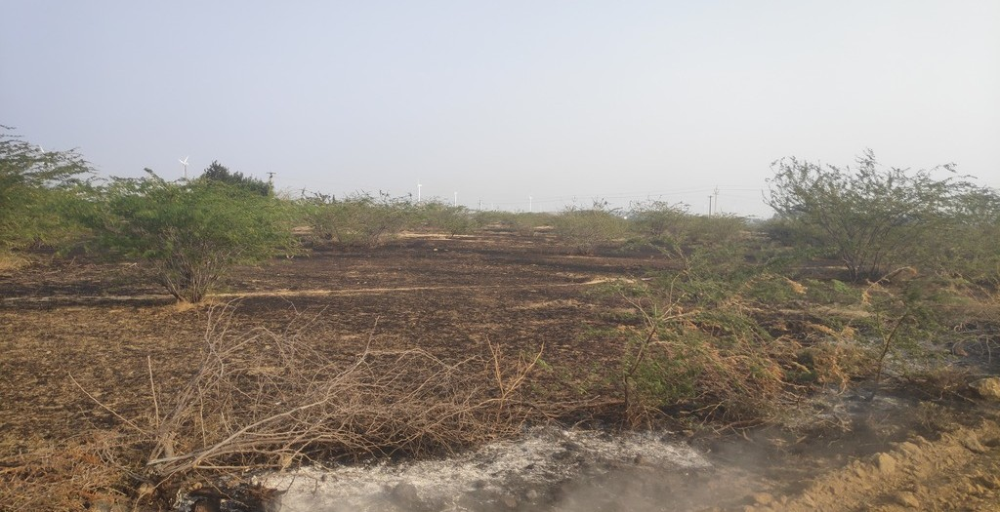

When I Saw a Wildfire
by Selva Krishnan K on February 10, 2025
What started as an ordinary night turned into an unforgettable experience when a sudden wildfire spread through our garden. With no rain for weeks, the dry land became fuel for the flames. My family and I battled the fire with whatever we had, facing moments of despair and hope. With teamwork and determination, we finally managed to stop it. This incident reminded me of the unpredictable power of nature and the strength of unity.
Read more
In Loving Memory of Ratan Tata
by Selva Krishnan K on October 10, 2024
Ratan Tata was a visionary leader and philanthropist whose legacy transcends business. This tribute celebrates his extraordinary contributions to society, his inspiring leadership, and his lifelong dedication to making the world a better place. Join us in honoring a legend who touched the lives of millions.
Read more

Launching Your Site: GitHub Pages Made Simple
by Selva Krishnan K on August 16, 2024
Discover how to effortlessly host your website using GitHub Pages with our comprehensive guide. From setting up your Git repository to configuring custom domains and HTTPS, this post provides clear, actionable steps to get your site live on the web. Perfect for developers looking to streamline their deployment process and make the most of GitHub Pages' capabilities.
Read more

Connecting Frontend with Python Flask Backend
by Selva Krishnan K on August 13, 2024
Explore the step-by-step process of integrating your frontend with a Python Flask backend. This guide will walk you through the key concepts, offering practical examples to help you build dynamic web applications with ease.
Read more

A Lesson in Sportsmanship: My Heart-Touching Olympic Moment
by Selva Krishnan K on August 07, 2024
Join me as I recount a profound Olympic experience that highlighted the true spirit of sportsmanship. This personal story will inspire and remind you of the values that transcend competition and unite us all.
Read more
Git Mastery: Essential Commands and Best Practices
by Selva Krishnan K on August 03, 2024
Discover the fundamentals of Git, from basic commands to advanced techniques. Whether you're a beginner or an experienced developer, this guide will help you master version control and streamline your workflow.
Read more
My Journey as a Developer: From Biology to Bytes
by Selva Krishnan K on July 29, 2024
Discover my journey from a biology student to a passionate developer. Learn about my experiences, projects, and the skills I've acquired along the way. Follow my story of growth and innovation in the field of computer science and engineering.
Read more